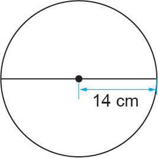

Activity 2
Using Pi to measure the circumference of a circle
Steps
1.
Use a measuring tape to measure and record the diameter of a bicycle tyre.
2.
Calculate the circumference of the bicycle tyre using the formula:
Where, .
3.
Use a chalk to mark a starting point of the bicycle tyre.
4.
Wrap the rope around the tyre from one sign until when you reach that mark again to get one complete circle.
5.
Measure the length of the rope you have used in step 4.
6.
Compare the calculated circumference in step 5 with the one you got in step 2. What is your conclusion?
Thus, circumference of a circle = .
Remark: The circumference of the semi-circle can be found by taking half of circumference of the circle plus the diameter.
That is, the circumference of the semi-circle = .
Example 1
Find the circumference of a circle with a radius of 14 cm. Use .
Solution

14 cm
Therefore, the circumference of the circle is 88 cm.